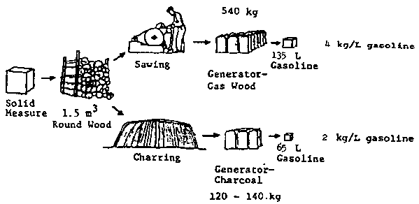

In this publication, an overview of gasifies technology and the main design rules for downdraught wood gasifiers are presented together with some accounts of recent experiences from practical operation, and assessments of the economy of the technique.
The possibilities of fuelling different types of engines by producer gas, the theory of wood gasification, gasification fuels, gasifier types and their design rules are presented in chapter 2. This chapter should not be considered as a complete design handbook for downdraught wood gasifies systems, but as a guide to those who wish to be able to assess the suitability of a particular gasifier system for a particular engine. Health and environmental hazards associated with the use of producer gas are also outlined.
Figure 1.2 Comparison between the amounts of gasoline which can be substituted by producer gas if wood or charcoal is utilized in the gasifier

The economy of using wood gasifiers for different stationary applications is discussed in chapters 4 to 6. These chapters also include accounts of recent operating experiences.
Use of gasifiers for operation of modern vehicles is discussed in chapter 3, on the basis of recent Swedish experiences. This chapter is designed to assist in evaluating the feasibility of wood gasifiers for road vehicles or tractors.
Even if the results presented in chapters 3 to 6 are valid in the strict sense, only for the particular circumstances of the cases described, they should be useful as indications of what can be expected in similar situations. The information can be adapted for applications where the operating conditions or the economic circumstances are different.
The future of wood gas as engine fuel is discussed in the final chapter where the need for continued international cooperation in this field is also emphasized.